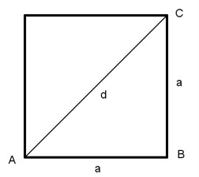
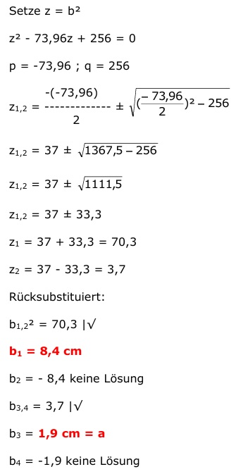
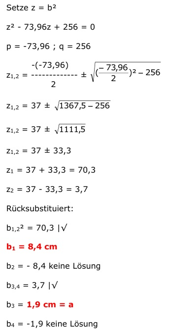

Flächenberechnungen Aufgabe 72
Ein Rechteck hat die gleiche Fläche wie ein Quadrat
mit der Seitenlänge 4 cm. Die Diagonalen von Rechteck
und Quadrat verhalten sich wie 3 : 2.
Wie groß sind die Seiten des Rechtecks?

dRechteck 3
----------- = --- |*dQuadrat
dQuadrat 2
dRechteck = 1,5 * dQuadrat
ARechteck = AQuadrat = 4 cm * 4 cm = 16 cm²
Satz von Pythagoras im Dreieck ABC:
dQuadrat² = a² + a²
dQuadrat² = 2 * 4 ²
dQuadrat² = 32 |√
dQuadrat = 5,7 cm
dRechteck = 1,5 * dQuadrat
dRechteck = 1,5 * 5,7 cm = 8,6 cm
A = a * b
16 = a * b | :b
16
a = ----
b
 Satz von Pythagoras im Dreieck ABC:
dRechtteck² = a² + b²
16
dRechteck² = (----)² + b²
b
256
8,6² = ------ + b² |*b²
b²
73,96 * b² = 256 + b4 |-73,96b²
b4 - 73,96b² + 256 = 0

Satz von Pythagoras im Dreieck ABC:
dRechtteck² = a² + b²
16
dRechteck² = (----)² + b²
b
256
8,6² = ------ + b² |*b²
b²
73,96 * b² = 256 + b4 |-73,96b²
b4 - 73,96b² + 256 = 0
